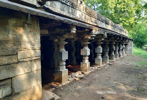

Bhuikot Killa
Bhuikot Killa means a fort that is built on flat land and not on any mountain. Bhui means Land in Marathi and Kot means Killa or Fort. Most forts during the Shivaji's era were built atop mountains. However, certain forts were also built on flat land.
Read More
Indrabhavan
Indra Bhawan was constructed and established a century back in 1907.It was set up by the Late Shri Appasaheb Varad.
Read More